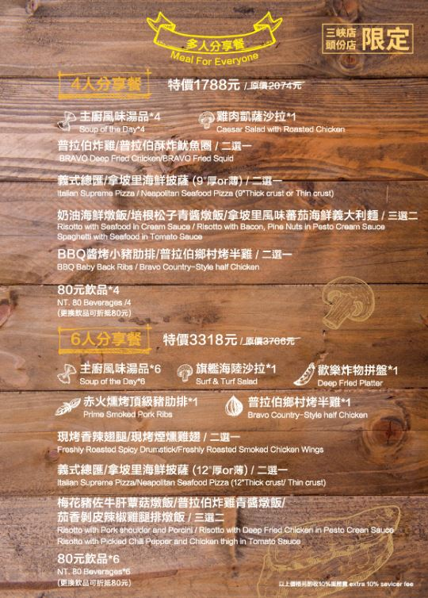
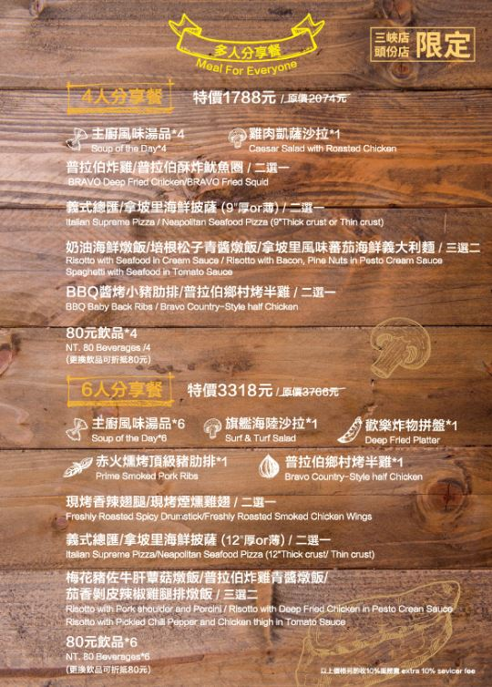
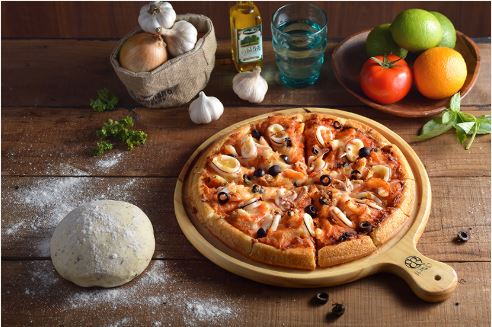
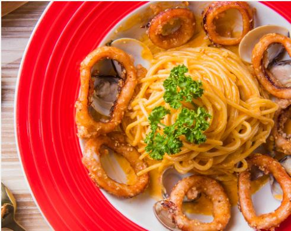

美味堅持
【自製高湯基底】
使用20多種食材熬煮，不添加任何人工香料，保持各食材的原味風貌
【普拉伯自製餅皮】
藉由控管烘培時間與溫度，製作出餅皮Q彈不油不膩的獨家配方
【進口特級冷壓橄欖油】
烹調油品選用香味濃郁，營養最豐富的進口特級初榨冷壓橄欖油，即使加熱也不擔心營養成分流失

特製醬汁

【義式奶油青醬】
採用義大利特級初榨橄欖油、松子與新鮮羅勒調製而成，內含奶油白醬包，兩者混搭即是味道濃郁、香氣撲人的奶油青醬，最適合搭配簡單食材：如松子、海鮮或雞腿肉
【義式蕃茄紅醬】
整粒蕃茄與大骨高湯熬製而成，在家就可DIY製作五星級飯 店的蕃茄紅醬義大利麵、燉飯與焗烤，特別推薦拿坡里蕃茄 海鮮義大利麵&蕃茄海鮮燉飯
【義式奶油白醬】
100% 紐西蘭乳源與大骨高湯製成，味道濃郁不膩，搭配任何食材都相當的 Mach，特別建議與培根或蛤蠣等食材搭配